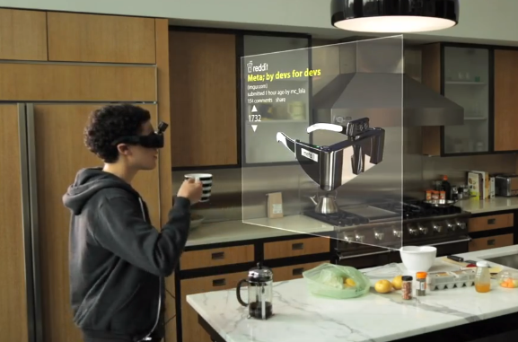
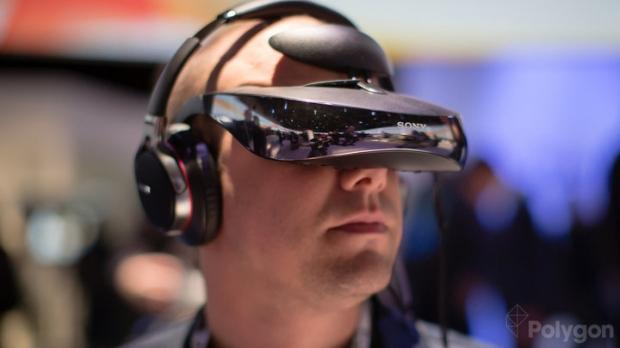
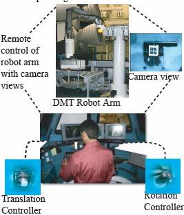
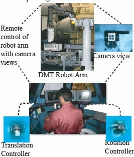

|
|
SJB Institute of Technology |
 |
Dept. of Computer Science & Engineering
A Technical Seminar On
What Wearable Augmented Reality Can Do?
AND
Joystick mapped Augmented Reality
BYManohara. K (1JB10CS054) |
Under The Guidance OfMrs. Chaitra.M Asst. professor |
AGENDA
- Presentation-2 Review
- Introduction
- What Wearable Augmented Reality Can Do for You
- Algorithm Outline
- Text Patch Recognition
- Applications
- Joystick mapped Augmented Reality
- Conclusions and Future Work
- References
Presentation-2 Review
Paper Based Augmented Reality
- Linking the physical and digital worlds is a long standing goal of augmented reality.
- The paper proposes a new method of interacting with documents termed Paper-Based Augmented Reality that links patches of text to electronic data
Haptic System for Eyes Free and Hands Free Pedestrian Navigation
- We presented a vibro-tactile system called HaptiNav, which illustrates the concept of Haptic Augmented Reality.
Introduction
- Wearable AR employs a head-mounted display (HMD), a wearable computer,and a set of sensors to determine the position and orientation of the user’s head.
- As users move their heads, the HMD updates their virtual world view accordingly.
- The most compelling argument for wearable augmented reality is its walk-up and ready-to-use aspect.,
Wearable AR Devices
 AR Processes
- Build a virtual world whose coordinate system is identical with the physical world’s
- Determine the position and orientation of the user’s head.
- Place the virtual graphics’ camera in that position and orientation
- Render an image of the physical world on the user’s HMD.
- Render the graphical overlay over the physical-world image.
APPLICATIONS
- Researchers have investigated a wide range of applications—medical, military, security, entertainment, navigation, shopping, maintenance
- This technology also has a place in shopping malls. A range of possibilities are available, such as providing product information, highlighting shopping lists
- Entertainment is a good candidate for early adoption of wearable AR
- Wearable AR would be of great help to the medical profession
Joystick mapped Augmented Reality
- Operating a robotic arm from indirect visual information poses many technical and human performance challenges for the operator.
- This paper reports the positive effects of Augmented Reality visual cues on operator performance during end-effector controlled tele- operation using only camera views.
- Our solution is to overlay a color-coded coordinate system on the end-effector of the robot using AR techniques
 

Fig. User controlling the NASA robot with two handcontrollers and remote video views.
Conclusions
- In this presentation we discussed in Section two is a useful foundation for exploring the significance of AR in the inherent mental transformations present during tele-operations.and the importance of the Wearable Devices
- The preliminary subject testing performed shows that AR reduces reversal errors and distance traveled, thereby supporting some of our hypothesis.
- So Scope of Augmented Reality is broadened as the applications it provides are high
REFERENCES
- R. Azuma et al., “Recent Advances in Augmented Reality,” IEEE Computer Graphics and Applications, vol. 21, no. 6, 2001, pp. 34-47.
- B. Thomas et al., “ARQuake: An Out- door/Indoor Augmented Reality First Person Application,” Proc. 4th Int’l Symp. Wearable Computers (ISWC 00), IEEE CS Press, 2000, pp. 139-146.
- Chien C.H. “A Computer Vision System for Extravehicular Activity Helper and Retriever.” Intern. Journal on Applied Intelligence; 5:251-265, 1995